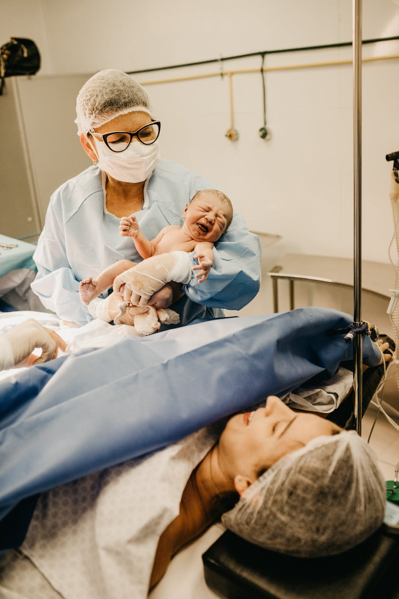
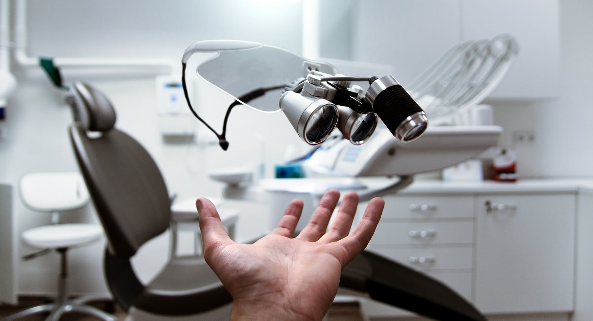

Диагностический центр
С протезами мы можем помогать людям уверенно преодолевать ограничения.
Мы подбираем решение по биомеханике, активности и целям пациента.
РЕШЕНИЯ ДЛЯ ЖИЗНИ
Наши современные протезные устройства разработаны для обеспечения оптимального комфорта, функциональности и долговечности, позволяя вам легко выполнять повседневные задачи. Протезные технологии помогают воплощать это в реальность.


О КОМПАНИИ
Область, где технологии встречаются с человечностью
Протезирование — это быстро развивающееся направление биомедицинской инженерии, которое фокусируется на проектировании, разработке и изготовлении искусственных конечностей и других устройств, помогающих людям с физическими ограничениями.
Протезирование также помогает улучшать результаты медицинской помощи: повышать мобильность и самостоятельность пациентов, снижать расходы на лечение и повышать общее качество жизни.
С протезами мы можем помогать людям уверенно преодолевать ограничения.
Мы подбираем решение по биомеханике, активности и целям пациента.
Современные протезные решения поддерживают движение и возвращают свободу.
Технологии помогают восстановить уверенную походку и снизить нагрузку.
Создаём мост, который соединяет физические ограничения с новыми возможностями.
Каждый модуль проектируется персонально под человека и его сценарии жизни.
Ограничения можно преодолеть, если подобрать корректную поддержку на каждом этапе.
От домашнего быта до спорта: подбираем инструменты под реальную жизнь.
врачей работают ежедневно
лет средний стаж специалистов
успешных операций в год
В нашей клинике Вам поставят точный диагноз, потому что для этого организованы все необходимые диагностические процедуры и установлено современное оборудование. Мы можем гарантировать Вам точность диагноза и успешность лечения, потому что в свою команду мы отбираем только лучших врачей.
Наша задача, в первую очередь — подобрать оптимальную стратегию лечения и добиться максимального результата при минимальном вмешательстве.
